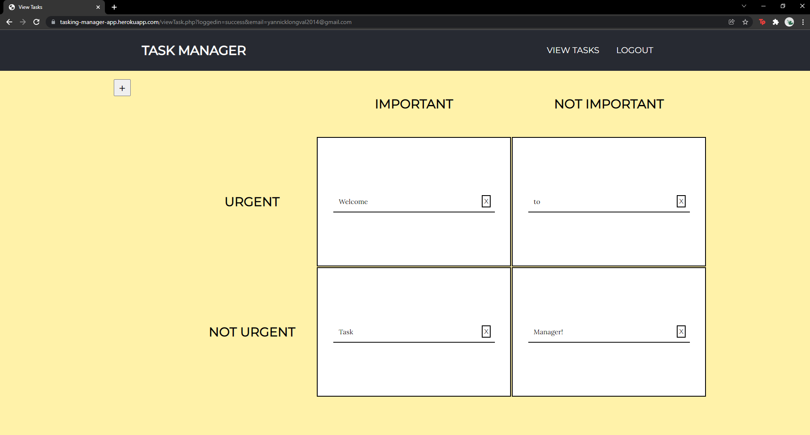

Task Manager
Click here to check it out!
Organize your tasks based on importance and urgency using this manager program. Task Manager lets users save tasks and label them based on how important and urgent they are. Using PHP and SQL, Task Manager saves the users the users tasks into a database the be accessed even after closing the program.
